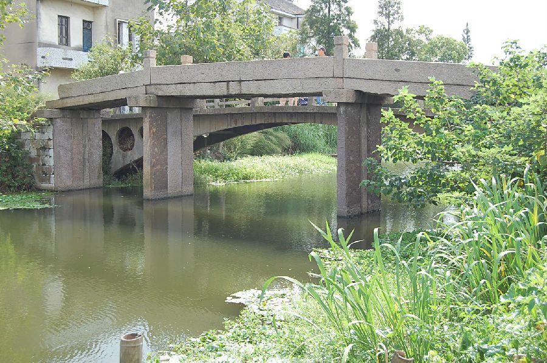

嘉兴市文物保护网 · 市级文物保护点 · 2020-11-06 · 原文

桃园村年安桥位于嘉兴市秀洲区新塍镇桃园村12组。由桥额文字可知重建于民国十四年（1925），南北横跨年安桥港，系三孔有栏石板桥，全长21.7米，宽1.75米，桥面和桥柱均由3块石板组成，两侧桥栏上共有方形望柱4个，桥底距水面高度3.3米。南北落坡各设石阶10级。桥额刻“重建年安桥”、旁镌小字“民国十四年”。东西桥联刻“南来十里是新溪，东区一湾通舜水。桥以时成农工不害，民无病涉王政维修。”桥身无纹饰。年安桥造型美观，做工考究，保存较好，是当地重要的历史建筑，具有较高的历史和艺术价值。2010年公布为嘉兴市文物保护点。